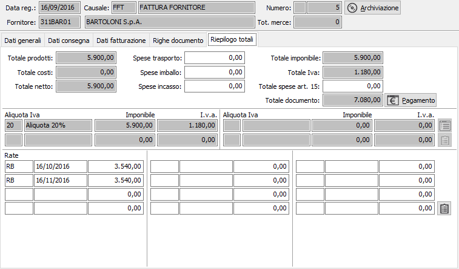
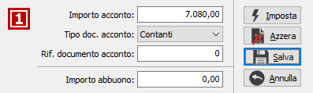
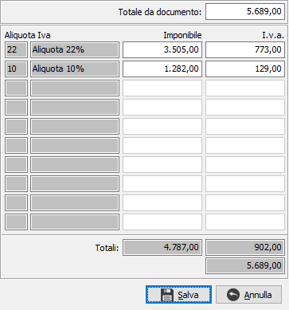

Riepilogo totali
L’ultima finestra video presenta i totali a valore della fattura; vengono visualizzati l’importo dei prodotti, l’importo delle prestazioni e degli addebiti ed il totale al netto degli sconti. È consentito, prima di determinare il totale imponibile, di impostare eventuali addebiti per spese di trasporto, spese d’imballo, spese d’incasso e infine spese non soggette ad Iva in forza dell’art. 15 DPR 633/72. Viene visualizzato il castelletto Iva con l'indicazione dei vari imponibili, le relative aliquote ed imposte calcolate, nel caso le aliquote IVA siano più di quelle visualizzate sarà presente un pulsante per visualizzare una finestra dove saranno mostrate tutti gli imponibili e le imposte relative fino ad un massimo di dieci. Visualizza infine le scadenze calcolate in base alle modalità di pagamento applicate, con il relativo pulsante per accedere al Dettaglio scadenze. Se in configurazione base è attiva la gestione delle scadenze variabili l’utente avrà la possibilità di modificare le rate sia in termini di tipo pagamento, sia in termini di scadenza e di importi a condizione che il totale delle rate corrisponda al totale documento.

SPESE TRASPORTO: campo numerico per l’eventuale inserimento di addebiti per spese di trasporto soggette ad Iva proporzionalmente alle aliquote presenti o ad aliquota fissa a seconda di quanto specificato in configurazione.
SPESE IMBALLO: campo numerico per l’eventuale inserimento di addebiti per spese di imballo soggette ad Iva proporzionalmente alle aliquote presenti o ad aliquota fissa a seconda di quanto specificato in configurazione.
SPESE INCASSO: campo numerico per l’eventuale inserimento di addebiti per spese di incasso soggette ad Iva proporzionalmente alle aliquote presenti o ad aliquota fissa a seconda di quanto specificato in configurazione.
TOTALE SPESE ART 15: campo numerico per l’eventuale inserimento di addebiti per anticipazioni in nome e per conto non imponibili in base all’art. 15 DPR 633.

PULSANTE PAGAMENTO: Il pulsante Pagamento consente di inserire dati relativi ad eventuali acconto e/o abbuono, premendo il pulsante compare la finestra di inserimento dei dati. In questa finestra è possibile inserire l'importo dell'eventuale acconto, il tipo di documento con cui l'acconto viene pagato, selezionando tra contanti, assegno bancario oppure assegno circolare; nel caso di assegno è possibile inserire il numero dell'assegno stesso nel campo 'Rif. documento acconto'. È possibile inserire l'importo dell'eventuale abbuono nel campo 'Importo abbuono'. Il pulsante Imposta reinizializza i valori riportando il totale documento sull'importo acconto, il pulsante Azzera chiude la finestra azzerando tutti i valori, il pulsante Salva chiude la finestra salvando i valori presenti ed il pulsante Annulla chiude la finestra ripristinando i valori originali.

Tramite questo pulsante è possibile modificare manualmente il castelletto Iva calcolato per gestire le situazioni in cui la fattura del fornitore a livello di totali imponibile e/o imposta differisce di centesimi rispetto al documento ricevuto. Compare la finestra mostrata a lato in cui è possibile modificare il totale, gli imponibili e gli importi Iva; al salvataggio viene comunque controllata la coerenza tra il totale, gli imponibili e gli importi Iva.
Al termine dell'inserimento dei dati, quando viene premuto il tasto F10 oppure il pulsante Salva nella tool bar compare, se configurato, la finestra di conferma della registrazione.